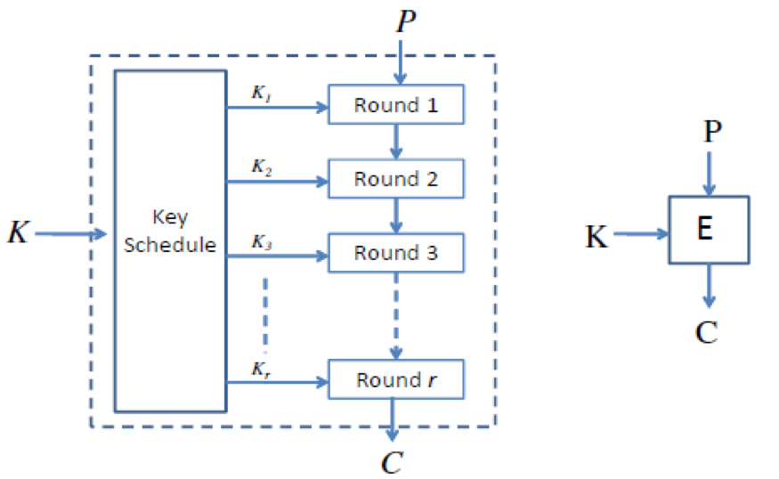

块加密¶
概述¶
所谓块加密就是每次加密一块明文，常见的加密算法有
- IDEA 加密
- DES 加密
- AES 加密
块加密也是对称加密。
其实，我们也可以把块加密理解一种特殊的替代密码，但是其每次替代的是一大块。而正是由于一大块，明文空间巨大，而且对于不同的密钥，我们无法做一个表进行对应相应的密文，因此必须得有 复杂 的加解密算法来加解密明密文。
而与此同时，明文往往可能很长也可能很短，因此在块加密时往往需要两个辅助
- padding，即 padding 到指定分组长度
- 分组加密模式，即明文分组加密的方式。
基本策略¶
在分组密码设计时，充分使用了 Shannon 提出的两大策略：混淆与扩散两大策略。
混淆¶
混淆，Confusion，将密文与密钥之间的统计关系变得尽可能复杂，使得攻击者即使获取了密文的一些统计特性，也无法推测密钥。一般使用复杂的非线性变换可以得到很好的混淆效果，常见的方法如下
- S 盒
- 乘法
扩散¶
扩散，Diffusion，使得明文中的每一位影响密文中的许多位。常见的方法有
- 线性变换
- 置换
- 移位，循环移位
常见加解密结构¶
目前块加密中主要使用的是结构是
- 迭代结构，这是因为迭代结构便于设计与实现，同时方便安全性评估。
迭代结构¶
概述¶
迭代结构基本如下，一般包括三个部分
- 密钥置换
- 轮加密函数
- 轮解密函数

轮函数¶
目前来说，轮函数主要有主要有以下设计方法
- Feistel Network，由 Horst Feistel 发明，DES 设计者之一。
- DES
- Substitution-Permutation Network(SPN)
- AES
- 其他方案
密钥扩展¶
目前，密钥扩展的方法有很多，没有见到什么完美的密钥扩展方法，基本原则是使得密钥的每一个比特尽可能影响多轮的轮密钥。